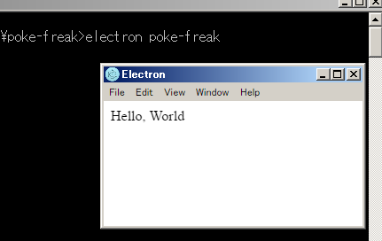

初期化
- Gitリポジトリを作成
- ※ リポジトリ名がプロジェクト名となるので注意
- ローカルにリポジトリをクローン
- このディレクトリがプロジェクトのルートディレクトリとなる。
- ルートディレクトリで「npm init -y」を実行
- 実行後、package.json が自動生成される。
gulp導入
- ルートディレクトリで以下のコマンドを実行
- npm --save-dev install gulp
- npm --save-dev install gulp-babel@5.3.0
- npm --save-dev install gulp-load-plugins
- npm --save-dev install gulp-util
- npm --save-dev install through2
- npm --save-dev install browserify
- gulpを用いた基本的なプログラミングで利用
- babelのバージョン指定はelectronとの互換性のため
- npm --save-dev install gulp-mocha
- npm --save-dev install mocha
- npm --save-dev install electron-prebuilt
- npm --save-dev install electron-packager
- npm --save-dev install asar
- ルートディレクトリ直下に生成される node_modules ディレクトリを、.gitignoreに登録
- ディレクトリを右クリックして「TortoiseGit」→「無視リストに追加」
gulpfile作成
- 以下のファイルをローカルに保存し、ルートディレクトリ直下に配置する
- ※ ビルドスクリプトのようなもの
エントリポイント作成
- 以下のファイルをローカルに保存し、ルートディレクトリ直下に配置する
- ※ 内容は適宜調整のこと
ディレクトリ構成
- 以下の構成を推奨しておく
- [root]
- node_modules
- app
- css
- image
- script
- sound
- view
- xxx.html
- yyy.html
- zzz.html
- cache
- src
- main
- test
- jsx
- aaa-test.jsx
- bbb-test.jsx
- ccc-test.jsx
- .gitignore
- gulpfile.js
- index.js
- package.json
- ※ cache ディレクトリについては、.gitignoreに登録しておく
- ディレクトリを右クリックして「TortoiseGit」→「無視リストに追加」
Hello, World
- app/view ディレクトリ直下に title.html を作成する
- title.html をテキストエディタで開き、「Hello, World」とだけ書いて保存
- ルートディレクトリで「electron [プロジェクト名]」を実行
- よく使うことになるので、上記コマンドを記載したbatファイルでも作っておくと良い
- electronのウィンドウが表示されたら成功
- 